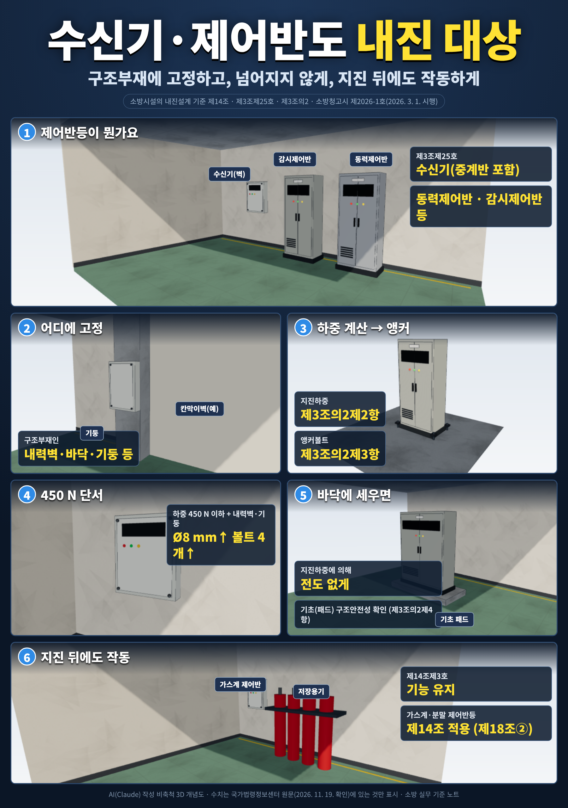
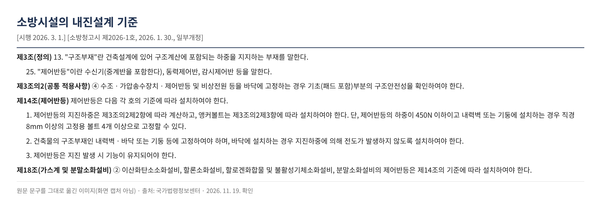
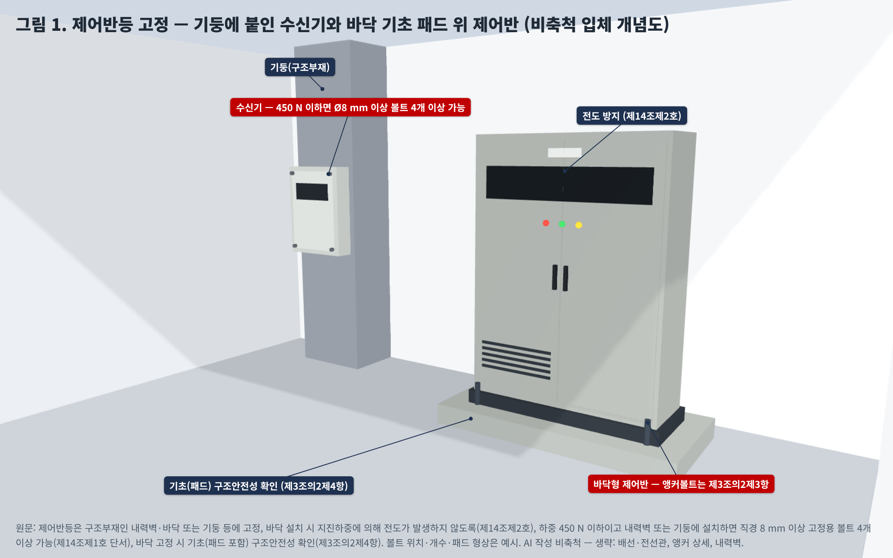

수신기·제어반도 내진 대상입니다 — 제어반등 고정 기준 3가지
왜? 배관이 버텨도 펌프를 돌리고 경보를 내는 반이 넘어지거나 떨어지면 소방시설 전체가 멈추기 때문에, 제어반등을 따로 한 조문으로 정해 둔 기준입니다.

1. 공식 기준 원문 (소방시설의 내진설계 기준, 현행)
제14조(제어반등) 제어반등은 다음 각 호의 기준에 따라 설치하여야 한다.
1. 제어반등의 지진하중은 제3조의2제2항에 따라 계산하고, 앵커볼트는 제3조의2제3항에 따라 설치하여야 한다. 단, 제어반등의 하중이 450N 이하이고 내력벽 또는 기둥에 설치하는 경우 직경 8mm 이상의 고정용 볼트 4개 이상으로 고정할 수 있다.
2. 건축물의 구조부재인 내력벽ㆍ바닥 또는 기둥 등에 고정하여야 하며, 바닥에 설치하는 경우 지진하중에 의해 전도가 발생하지 않도록 설치하여야 한다.
3. 제어반등은 지진 발생 시 기능이 유지되어야 한다.
제3조(정의) 13. “구조부재”란 건축설계에 있어 구조계산에 포함되는 하중을 지지하는 부재를 말한다. / 25. “제어반등”이란 수신기(중계반을 포함한다), 동력제어반, 감시제어반 등을 말한다.
제3조의2 ④ 수조ㆍ가압송수장치ㆍ제어반등 및 비상전원 등을 바닥에 고정하는 경우 기초(패드 포함)부분의 구조안전성을 확인하여야 한다.
제18조 ② 이산화탄소소화설비, 할론소화설비, 할로겐화합물 및 불활성기체소화설비, 분말소화설비의 제어반등은 제14조의 기준에 따라 설치하여야 한다.
원문 화면

2. 적용 조건
① 어떤 반이 “제어반등”인가. 원문 정의는 수신기(중계반 포함)·동력제어반·감시제어반이고 끝에 “등”이 붙어 있습니다. 가스계·분말소화설비의 제어반등도 제18조제2항에 따라 제14조를 그대로 따릅니다.
② 내진설계 대상 건물인지 먼저. 이 기준은 소방시설법 시행령 제8조에 따른 옥내소화전설비·스프링클러설비·물분무등소화설비에 적용됩니다(제2조제1항). 대상 여부 판단은 시행령 제8조를 따르세요.
③ 고정 부재는 “구조부재”. 내력벽·바닥·기둥 등, 즉 구조계산에 포함되는 하중을 지지하는 부재(제3조제13호)에 고정합니다. 원문 정의상 구조계산에 들어가지 않는 경량 칸막이벽은 구조부재로 보기 어렵다는 것이 일반적 해석입니다(의견).
④ 하중 계산과 앵커. 지진하중은 제3조의2제2항(건축물 내진설계기준의 비구조요소 설계지진력, 허용응력설계법이면 그 밖의 방법으로 산정한 값 × 0.7)으로 계산하고, 앵커볼트는 제3조의2제3항으로 설치합니다. 앵커 세부는 앵커볼트 해설 글에 정리했습니다.
⑤ 450 N 단서. 하중 450 N 이하 그리고 내력벽 또는 기둥 설치, 두 조건을 모두 갖추면 계산·앵커 대신 직경 8 mm 이상 고정용 볼트 4개 이상으로 고정할 수 있습니다. 단서에 “바닥”은 없습니다.
⑥ 바닥 설치. 지진하중에 의해 전도가 발생하지 않도록 설치하고(제14조제2호), 기초(패드 포함)의 구조안전성을 확인합니다(제3조의2제4항).
⑦ 기능 유지. 원문은 “지진 발생 시 기능이 유지되어야 한다”고만 정하고 확인 방법은 따로 정하지 않습니다.
3. 그림으로 보기

그림은 AI(Claude)로 그린 비축척 개념도입니다. 원문에 있는 조건(구조부재 고정, 전도 방지, 450 N·Ø8 mm·4개, 기초 패드)만 표시했고 볼트 위치·앵커 개수·패드 크기는 예시입니다. 배선·전선관, 앵커 상세는 생략했습니다. 설치 적합 판정용 도면이 아닙니다.
측정 기준점 주의: 450 N은 원문상 “제어반등의 하중”입니다. 원문은 이 하중에 무엇을 포함하는지 따로 정하지 않습니다. 가동중량 정의(제3조제10호나목: 제어반등의 작동상태를 고려한 무게는 유효중량에 안전율을 고려하여 적용)를 함께 보아 판단하되, 해석이 갈리는 현장은 관할 소방서에 먼저 확인하세요. 참고로 450 N은 약 45.9 kgf입니다(9.81 m/s² 기준 계산값, 원문 수치 아님).
4. 단계별 확인사항
| 단계 | 확인할 것 |
|---|---|
| 설계 | 수신기·중계반·동력제어반·감시제어반·가스계 제어반 목록 작성 → 반별 설치 위치(벽·기둥·바닥)와 그 부재가 구조부재인지 확인 → 지진하중 계산 또는 450 N 단서 적용 근거(하중, 내력벽·기둥 여부) 기록. 바닥형은 전도 검토와 기초(패드) 구조안전성 검토 |
| 시공 | 설계와 같은 부재에 고정(현장에서 칸막이벽으로 위치가 바뀌면 설계 재검토). 단서 적용 반은 Ø8 mm 이상 볼트 4개 이상. 바닥형은 앵커·패드 시공 |
| 감리 | 반별 하중 근거와 설치 벽체 종류 대조, 앵커 규격·개수, 패드 구조안전성 검토서, 가스계·분말 제어반 포함 여부 |
| 유지관리·점검 | 반 교체·이설 후 고정 상태, 볼트 풀림·누락, 패드 균열, 반 내부 기기 고정 상태 |
5. 적용 시점과 경과조치
현행본: 소방청고시 제2026-1호(2026. 1. 30. 발령, 2026. 3. 1. 시행).
연혁 대조: 제14조 전체, 제3조제25호, 제3조의2제4항, 제18조제2항 문구를 개정 전 판본(소방청고시 제2022-76호, 2022. 12. 1. 시행)과 국가법령정보센터에서 대조한 결과 같습니다.
경과조치(부칙 제2026-1호 제2조): 이 고시 시행 전에 건축허가 등의 신청 또는 신고를 하거나 소방시설공사의 착공신고를 한 특정소방대상물에 대해서는 종전의 기준에 따릅니다.
기존 건축물 특례(제19조): 기존건축물이 증축·개축·대수선되거나 용도변경되는 경우 내진설계 공사가 현저하게 곤란하다고 소방본부장 또는 소방서장이 인정하면, 기능·사용에 지장이 없는 범위에서 기준 일부를 적용하지 않을 수 있습니다.
확인하지 못한 것: 제2022-76호보다 이전 판본의 제14조 문구, “건축물 내진설계기준(KDS 41 17 00)” 비구조요소 설계지진력 세부 내용, 수신기 등 제품 기준(형식승인 기술기준)의 내진 관련 규정은 이번에 원문을 대조하지 않았습니다.
공식 원문 링크
· 소방시설의 내진설계 기준 현행(소방청고시 제2026-1호) — 본문·부칙·별표
· 개정 전 판본(소방청고시 제2022-76호, 2022. 12. 1. 시행)
· 같이 보기: 내진 앵커볼트 — 제3조의2제3항, 가압송수장치 내진스토퍼 — 제5조, 가지배관 고정장치 — 제13조